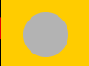
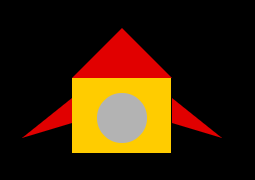
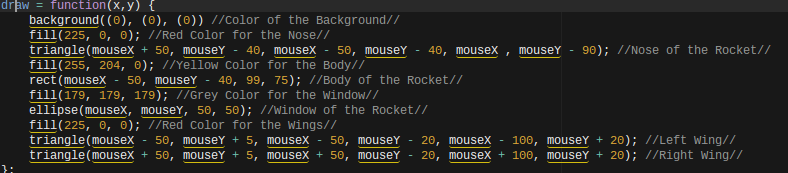

In this page I will be going over the specifics of the code that went into the art page. But before we get into the code it is important to note that no HTML was used but JavaScript was used instead. So now that that is out of the way let's get to the main act shall we?
I have created a rocket ship made up of different shapes such as ellipses, rectangles, and triangles. The rocket ship is on a black background and when the mouse moves and fulfills a certain condition, circles of random colors and sizes would flash giving off the feeling that the rocket is going hyperspeed. Planets would also appear when certain conditions are met.
In JavaScript ellipses are made by using the ellipse command which has this syntax
ellipse(x, y, width, height);
The code consists of the ellipse command which tells JavaScript what to draw which is a circle in this case.
The four parameters tells JavaScript where and how to draw the circle. The first two parameters tell JavaScript where to draw
the circle in the x and y position respectively while the last two controls the width and height of the circle.
Also do not forget to put a semicolon after that line of code don't ask me why we need a semicolon ask the people who made up this programming language.
How the ellipse command applies to my project
ellipse(mouseX, mouseY, 50, 50);
Instead of using the static x and y coordinates I have used the mouseX and mouseY parameter so that whenever I move the mouse the circle moves along.
In JavaScript triangles are made by using the triangle command which has this syntax
triangle(x1, y1, x2, y2, x3, y3);
The code consists of the triangle command which tells JavaScript to draw a triangle.
Though instead of only having four parameters like with the circle, it has six which tells JavaScript where the vertices of the triangle are located and the lines would be drawn
the x would tell JavaScript the x coordinate of the dots while the y would tell where the dots would be on the y coordinate.
Take for example the parameters are (100, 100, 150, 150, 50, 150)
The first vertex would be located at (100,100) while the second would be located (150,150) and the third would be located at (50,150)
How this command applies to my code
triangle(mouseX + 50, mouseY - 40, mouseX - 50, mouseY - 40, mouseX , mouseY - 90);
Like the circle is used the mouse commands to make the shape move according to the mouse's position in the canvas but I had to add and subtract some numbers in order to fit it with the whole ship.
In JavaScript rectangles are made by using the triangle command which has this syntax
rect(x, y, width, height);
The code consists of well...you get the idea a rectangle command and it tells JavaScript to draw a rectangle.
The parameters consists of x, y, width, and height but it is important to note that the x parameter will start at the upper left vertex of the rectangle.
So if the x coordinate starts at 50 the vertex will be on 50 rather than the center of the rectangle being at coordinate 50.
Again, don't ask me why JavaScript decides to do this but ask the people who made this programming language.
How this command applies to my code
rect(mouseX - 50, mouseY - 40, 99, 75);

This shape uses the mouse commands so that it can move in accordance to the mouse's position and has some numbers subtracted so that the square could fit as the body.
These shapes would end up becoming the rocket ship in the final product

In order for something to activate in JavaScript certain conditions must be made and that is where the If Statement comes in.
Syntax
if (*Condtion Statement*){
Code Block to be Executed
}
The code consists of the if command which tells JavaScript that there must be a condition to fulfill before the code block can be executed.
You can add more conditions by using the && command which signifies the word 'and' or you can use the || command which means 'or'.
Take for example that you want to give an extra life for every 100 coins the player collects the syntax would go like this
if (coins >= 100){
lives++
}
"++" just means plus one if you did not know
In this project I used the if statements in a way where if the mouse position is above or below a certain number circles would appear on screen
if (mouseY <= 225){
fill()
ellipse(100, 85, 150, 150);}
The if statement shows that if the mouse is less than 225 on the y coordinate the moon will show as long as the mouse keeps moving
If you want something else to occur while the if statement's condition is not fulfilled then you can use what is called an else statement.
The else statement causes a code block to be executed if and only if the if statement condition returns false.
Syntax
if(*condition statement*){
Code Block
}
else{
Code Block
}
It is important to note that an else statement MUST be accompanied by an if statement and does not need a condition statement
I had applied the else statement in the project in that whenever the if statment returns false circles in random sizes and colors would flash as long as the mouse keeps moving
if (mouseY <= 225){
fill()
ellipse(100, 85, 150, 150);}
else {
for(var i = 0; i < width; i+=30){
for(var j = 0; j < width; j+=30){
var size = random(30);
fill(random(255), random(255), random(255))
ellipse(i, j, size, size)
}
The flashing circles give off the feeling that the rocket that are going into hyperspeed and hyperspeed would stop once the rocket stops "moving"
If you want to have a function run multiple times there are two ways to do it which is either to do it manually or by using a loop.
Syntax
for(var i = 0; i < 10 ; i++){Code Block To Be Executed}
The for loop consists of three statements, the first one is the initiation which initiates a variable to a certain value in which most of the time is zero.
The second statement is the condition which sets a condition and tells the loop to run until the condition is met. The third statement states what is to happen once the loop is completed.
I had applied this in my art project by using the loop in order to make circles of random sizes and colors without any manual input in the code.
for(var i = 0; i < width; i+=30){
var size = random(30);
fill(random(255), random(255), random(255))
ellipse(i, j, size, size)}
The loop sets the variable i to the value of zero and in order for the code to run 'i' would have to be less than the width of the circle and once the loop runs the circle size would have a random width and have random colors
with the ellipse having the x coordinate of the variable i and has the random size of 30. The loop would in turn create flashing circles that would probably hurt your eyes if you look at it for too long.
The draw function is for the drawing of different shapes that were put into the function
Syntax
draw = function(x,y) {Code Block to be Executed}
The draw function was used in my project to draw the shapes that would make up the rocket ship

These four components would come and create this art page. The shapes would create the rocket ship while the background command tell JavaScript to color the background which was black in this case. Conditional statements would cause the page to function once the mouse moves is beyond a certain pixel and planets would "show up". The loops would then work in the else statement where if any conditions were not met then circles would flash in different shapes and colors. As a result of these code working together, a monstrosity was created MWAHAHAHAHA.
The first choice I had to make when working on this project was deciding what I wanted to make and after playing around and seeing other people's projects I decided to make a rocket ship in space. I wanted to make the rocket ship moveable by the mouse so I had checked processing.js and saw the mouseMoved function. The only problem was that the shapes would be in different places when I moved the mouse so I had to put the shapes in the formation of a rocket ship which took blood, sweat, and tears trying to fix it mostly through trial and error. Now that I had a rocket ship it needed a black background so I put the background command inside the draw function and set RGB to 0 for all three parameters to get black. Now that two requirements were out of the way I had to make a conditionals and loops so I created an if statement so now that if the mouse fulfills the condition planets would be able to show up and if the conditions are not fulfilled the circles would flash so that whenever there is movement from the mouse something will happen.
I will make sure to remember how the loop function works because it serves a very useful purpose in which code will run itself again as long as it fulfills the condition. It saves time from making me make and run the code manually and could also serve a purpose of creating bots to troll people (You didn't hear that).
If I had more time to improve my project I would find ways to make my ship fire lasers and make some sort of "game" out of it. I would like to make the ship look like a game sprite. I would also like to find a way to draw objects on the background without having to move the mouse. But even though I have not been able to acheive those things I am proud of the project